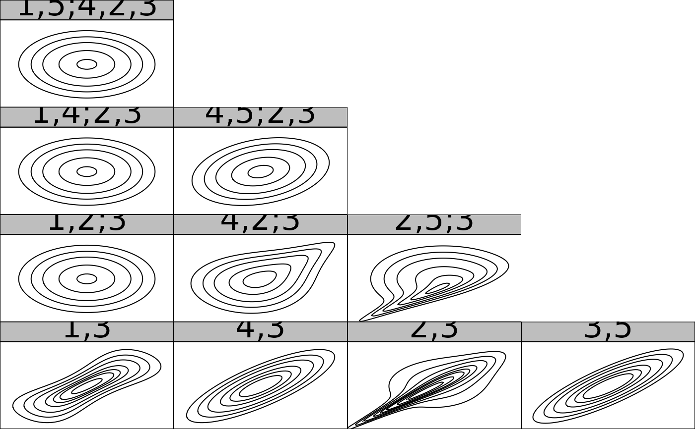

Automated fitting and model selection for vine copula models with continuous or discrete data. Selection of the structure is performed using the algorithm of Dissmann et al. (2013).
vinecop(
data,
var_types = rep("c", NCOL(data)),
family_set = "all",
structure = NA,
par_method = "mle",
nonpar_method = "constant",
mult = 1,
selcrit = "aic",
weights = numeric(),
psi0 = 0.9,
presel = TRUE,
trunc_lvl = Inf,
tree_crit = "tau",
threshold = 0,
keep_data = FALSE,
show_trace = FALSE,
cores = 1
)Arguments
- data
a matrix or data.frame with at least two columns, containing the (pseudo-)observations for the two variables (copula data should have approximately uniform margins). More columns are required for discrete models, see Details.
- var_types
variable types, a length d vector; e.g.,
c("c", "c")for two continuous variables, orc("c", "d")for first variable continuous and second discrete.- family_set
a character vector of families; see
bicop()for additional options.- structure
an
rvine_structureobject, namely a compressed representation of the vine structure, or an object that can be coerced into one (seervine_structure()andas_rvine_structure()). The dimension must belength(pair_copulas[[1]]) + 1;structure = NAperforms automatic selection based on Dissman's algorithm. See Details for partial selection of the structure.- par_method
the estimation method for parametric models, either
"mle"for maximum likelihood or"itau"for inversion of Kendall's tau (only available for one-parameter families and"t".- nonpar_method
the estimation method for nonparametric models, either
"constant"for the standard transformation estimator, or"linear"/"quadratic"for the local-likelihood approximations of order one/two.- mult
multiplier for the smoothing parameters of nonparametric families. Values larger than 1 make the estimate more smooth, values less than 1 less smooth.
- selcrit
criterion for family selection, either
"loglik","aic","bic","mbic". Forvinecop()there is the additional option"mbicv".- weights
optional vector of weights for each observation.
- psi0
prior probability of a non-independence copula (only used for
selcrit = "mbic"andselcrit = "mbicv").- presel
whether the family set should be thinned out according to symmetry characteristics of the data.
- trunc_lvl
the truncation level of the vine copula;
Infmeans no truncation,NAindicates that the truncation level should be selected automatically bymBICV().- tree_crit
the criterion for tree selection, one of
"tau","rho","hoeffd","mcor", or"joe"for Kendall's \(\tau\), Spearman's \(\rho\), Hoeffding's \(D\), maximum correlation, or logarithm of the partial correlation, respectively.- threshold
for thresholded vine copulas;
NAindicates that the threshold should be selected automatically bymBICV().- keep_data
whether the data should be stored (necessary for using
fitted()).- show_trace
logical; whether a trace of the fitting progress should be printed.
- cores
number of cores to use; if more than 1, estimation of pair copulas within a tree is done in parallel.
Value
Objects inheriting from vinecop and vinecop_dist for vinecop(). In
addition to the entries provided by vinecop_dist(), there are:
threshold, the (set or estimated) threshold used for thresholding the vine.data(optionally, ifkeep_data = TRUEwas used), the dataset that was passed tovinecop().controls, alistwith fit controls that was passed tovinecop().nobs, the number of observations that were used to fit the model.
Details
Discrete variables
The dependence measures used to select trees (default: Kendall's tau) are corrected for ties (see wdm::wdm).
Let n be the number of observations and d the number of variables.
When at least one variable is discrete, two types of
"observations" are required in data: the first n x d block
contains realizations of \(F_{X_j}(X_j)\). The second n x d
block contains realizations of \(F_{X_j}(X_j^-)\). The minus indicates a
left-sided limit of the cdf. For, e.g., an integer-valued variable, it holds
\(F_{X_j}(X_j^-) = F_{X_j}(X_j - 1)\). For continuous variables the left
limit and the cdf itself coincide. Respective columns can be omitted in the
second block.
Partial structure selection
It is possible to fix the vine structure only in the first trees and select
the remaining ones automatically. To specify only the first k trees, supply
a k-truncated rvine_structure() or rvine_matrix(). All trees up to
trunc_lvl will then be selected automatically.
References
Dissmann, J. F., E. C. Brechmann, C. Czado, and D. Kurowicka (2013). Selecting and estimating regular vine copulae and application to financial returns. Computational Statistics & Data Analysis, 59 (1), 52-69.
See also
vinecop(), dvinecop(), pvinecop(), rvinecop(),
plot.vinecop(), contour.vinecop()
Examples
## simulate dummy data
x <- rnorm(30) * matrix(1, 30, 5) + 0.5 * matrix(rnorm(30 * 5), 30, 5)
u <- pseudo_obs(x)
## fit and select the model structure, family and parameters
fit <- vinecop(u)
summary(fit)
#> # A data.frame: 10 x 11
#> tree edge conditioned conditioning var_types family rotation parameters df
#> 1 1 2, 3 c,c frank 0 9.4 1
#> 1 2 1, 3 c,c gumbel 180 2.5 1
#> 1 3 3, 4 c,c gaussian 0 0.87 1
#> 1 4 4, 5 c,c joe 180 3.3 1
#> 2 1 2, 1 3 c,c indep 0 0
#> 2 2 1, 4 3 c,c gumbel 180 1.4 1
#> 2 3 3, 5 4 c,c indep 0 0
#> 3 1 2, 4 1, 3 c,c indep 0 0
#> 3 2 1, 5 4, 3 c,c indep 0 0
#> 4 1 2, 5 4, 1, 3 c,c clayton 0 0.38 1
#> tau loglik
#> 0.65 17.1
#> 0.59 14.2
#> 0.67 18.6
#> 0.56 14.6
#> 0.00 0.0
#> 0.28 2.6
#> 0.00 0.0
#> 0.00 0.0
#> 0.00 0.0
#> 0.16 1.8
plot(fit)
contour(fit)

## select by log-likelihood criterion from one-paramter families
fit <- vinecop(u, family_set = "onepar", selcrit = "bic")
summary(fit)
#> # A data.frame: 10 x 11
#> tree edge conditioned conditioning var_types family rotation parameters df
#> 1 1 2, 3 c,c frank 0 9.4 1
#> 1 2 1, 3 c,c gumbel 180 2.5 1
#> 1 3 3, 4 c,c gaussian 0 0.87 1
#> 1 4 4, 5 c,c joe 180 3.3 1
#> 2 1 2, 1 3 c,c gumbel 180 1 1
#> 2 2 1, 4 3 c,c gumbel 180 1.4 1
#> 2 3 3, 5 4 c,c gumbel 180 1.1 1
#> 3 1 2, 4 1, 3 c,c clayton 0 0.3 1
#> 3 2 1, 5 4, 3 c,c joe 180 1.1 1
#> 4 1 2, 5 4, 1, 3 c,c clayton 0 0.33 1
#> tau loglik
#> 0.649 17.0685
#> 0.594 14.2112
#> 0.669 18.5508
#> 0.555 14.5922
#> 0.012 0.0039
#> 0.276 2.5573
#> 0.130 0.7643
#> 0.132 0.8172
#> 0.036 0.1760
#> 0.143 1.5077
## Gaussian D-vine
fit <- vinecop(u, structure = dvine_structure(1:5), family = "gauss")
plot(fit)
 contour(fit)
contour(fit)
 ## Partial structure selection with only first tree specified
structure <- rvine_structure(order = 1:5, list(rep(5, 4)))
structure
#> 5-dimensional R-vine structure ('rvine_structure'), 1-truncated
#> 5 5 5 5 5
#> 4
#> 3
#> 2
#> 1
fit <- vinecop(u, structure = structure, family = "gauss")
plot(fit)
## Partial structure selection with only first tree specified
structure <- rvine_structure(order = 1:5, list(rep(5, 4)))
structure
#> 5-dimensional R-vine structure ('rvine_structure'), 1-truncated
#> 5 5 5 5 5
#> 4
#> 3
#> 2
#> 1
fit <- vinecop(u, structure = structure, family = "gauss")
plot(fit)
 ## 1-truncated model with random structure
fit <- vinecop(u, structure = rvine_structure_sim(5), trunc_lvl = 1)
contour(fit)
## 1-truncated model with random structure
fit <- vinecop(u, structure = rvine_structure_sim(5), trunc_lvl = 1)
contour(fit)
 ## Model for discrete data
x <- qpois(u, 1) # transform to Poisson margins
# we require two types of observations (see Details)
u_disc <- cbind(ppois(x, 1), ppois(x - 1, 1))
fit <- vinecop(u_disc, var_types = rep("d", 5))
## Model for mixed data
x <- qpois(u[, 1], 1) # transform first variable to Poisson margin
# we require two types of observations (see Details)
u_disc <- cbind(ppois(x, 1), u[, 2:5], ppois(x - 1, 1))
fit <- vinecop(u_disc, var_types = c("d", rep("c", 4)))
## Model for discrete data
x <- qpois(u, 1) # transform to Poisson margins
# we require two types of observations (see Details)
u_disc <- cbind(ppois(x, 1), ppois(x - 1, 1))
fit <- vinecop(u_disc, var_types = rep("d", 5))
## Model for mixed data
x <- qpois(u[, 1], 1) # transform first variable to Poisson margin
# we require two types of observations (see Details)
u_disc <- cbind(ppois(x, 1), u[, 2:5], ppois(x - 1, 1))
fit <- vinecop(u_disc, var_types = c("d", rep("c", 4)))